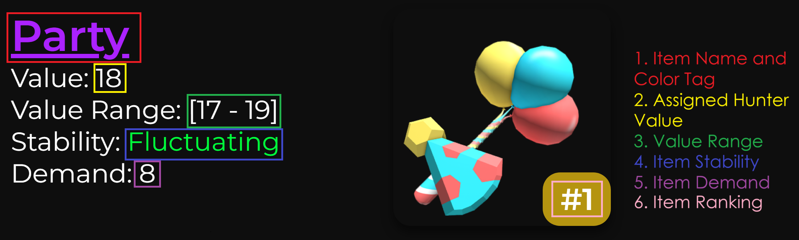

Tags
Tags help us provide more information on how an item is currently doing now versus how we anticipate an item will perform in the future. There are three types of tags currently, Color tags, Stability tags and Status tags.
Color Tags are useful to determine the overall prestige that an item has. Color Tags are organized in descending order from highly demanded and high valued items, to low valued and lower demanded items. Color Tags are useful to see a graphic representation of the demand that a set has.
Below is a the list of Color Tags and what they represent
⚪ = Outstanding
An exceptional set, one in a league of its own. Highly valued, sought after and receives drastic overpays.
🟣 = Great
Top sets that almost always receive great offers consistently, usually with even greater overpays than High.
🔵 = High
These sets are highly valued and receive frequent offers, typically with an overpay.
🟢 = Good
Good sets receive frequent offers and/or are highly valued. These are more easily traded off, potentially with an overpay.
🟡 = Average
An average set, not highly sought after but still gets offers occasionally.
🟠= Low
These sets are low demanded sets that are not sought after very often.
🔴 = Trash
Typically are either very low demanded items or sets that recently came out.
Stability Tags
Stability Tags are useful to giving the community our insight on what direction we believe an item is heading. This does not mean that everyone follows what the stability states, it is simply to reflect what most people think.
Below is a the list of Stability Tags and what they represent
Rising:
Items with this stability are rapidly gaining value.
Overpaid For:
This means that an item is relatively stable, but it typically pulls more than its base value.
Doing Well:
This means that an item is thriving and is unlikely to drop since it recieves good offers.
Improving:
Items with this stability are slowly gaining value. Sometimes this tag serves as a transition phase for items that are regaining value after a drop.
Fluctuating:
This means that an item has a weird value range. Its movement is unpredictable due to variations in overpays, underpays, and base value.
Stabilizing:
This means that the movement of an item is ending and it's soon to be stable.
Stable:
This means that an item has no movement currently.
Receding:
Items with this stability are slowly losing value. This tag can serve as a transition phase between items that were sought after (Overpaid For/Doing Well) but are beginning to taper off to reach a more stable state.
Underpaid For:
This means that an item is relatively stable, but is typically traded for less than its base value.
Dropping:
Items with this stability are rapidly losing value.
Unstable:
This means that an item has a lot of movement. Unstable items are risky investments and it is wise for new traders to avoid them.
Status Tags
Status Tags allow us to provide additional information that we feel can help provide further insight on an item.
Below is a the list of Status Tags and what they represent
Niche 💎:
This means that an item is stable, but has low demand and appeals to a small group of traders, typically collectors.
Undertraded 📉:
This means that an item is stable, but does not receive many trades.
Example

- Added Changelog for Use Guide
- Changed wording
- Expanded Status Tags usage